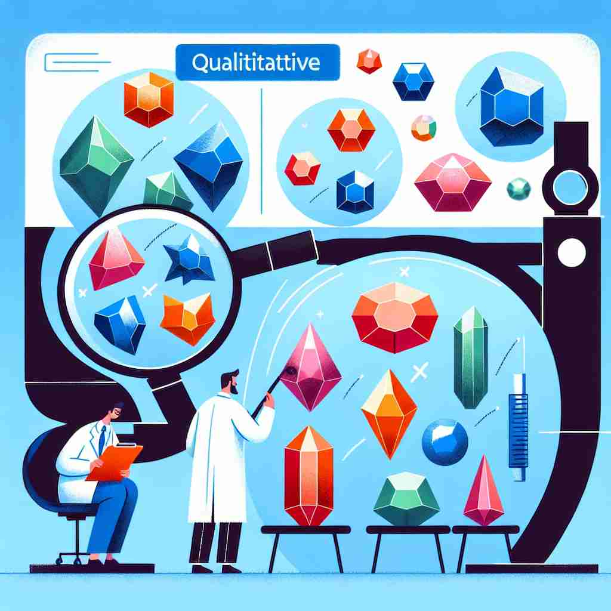

💬 The team conducted qualitative research to understand people's experiences better.

💬 The scientists are conducting a qualitative analysis of the crystals.
🔈 ['kwɒlɪtətɪv]
🗝️ adj. relating to the nature or standard of something, rather than to its quantity
🖼️ 在一个艺术展览中，一位策展人正在评价一幅画作。他用心观察画作的表现力与艺术风格，而不是关注其尺寸或颜色数量。他如此专注正体现了 'qualitative' 对事物本质和标准的强调。
🔍 记住'qualitative'的关键在于理解它总是关注事物的'质'而非'量'。无论是评估、分析还是比较，'qualitative'都强调的是性质、特征或本质，而不是数字或数量。将这个核心概念应用到各种场景中，就能轻松掌握这个词的不同用法。
💬 The team conducted qualitative research to understand people's experiences better.
💬 The scientists are conducting a qualitative analysis of the crystals.
🌳 由词根 "qualit-"（表示质量或性质）加上形容词后缀 "-ive" 组成，表示与某物的质量或性质相关。
💡 记住 "qualitative" 时，可以联想 "quality" + "related"，即与质量或性质相关的内容，通过质量、性质和描述三者之间的联系帮助记忆。
🗝️ adj. describing the features of something without measuring them
🖼️ 在一个植物学实验室里，研究人员正在描述一种新发现的植物。他们详细记录植物的叶形、颜色和质感，而不使用任何测量工具，这就是 'qualitative' 的特征描述方式。
💬 The researcher conducted a qualitative analysis of the interview responses.
❓ 关注事物的性质而非数量
🗝️ adj. of or relating to differences in kind rather than in amount
🖼️ 在一间教室里，老师正在引导学生讨论不同文化之间的差异。他们关注的是文化的独特性和种类，而不是他们的数量，这种分析方式就是 'qualitative' 的体现。
💬 There is a qualitative difference between leading and managing.
❓ 强调种类或本质的差异，而非数量上的差异
🗝️ adj. based on quality or character rather than on quantity or number
🖼️ 在一场音乐会的评审中，裁判们正在讨论演奏者的表演。他们主要关注演奏的情感表达和技巧，而不是音符的数量或演出时长，这正是 'qualitative' 的评价标准。
💬 The company focuses on qualitative growth rather than simply increasing sales numbers.
❓ 基于质量或特征，而非基于数量